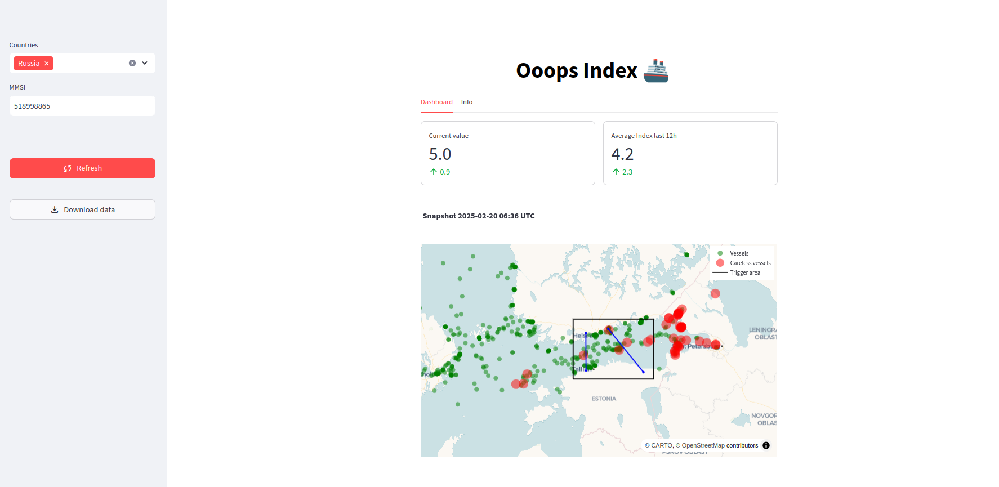

Ooops Index
𝗜 𝗸𝗻𝗼𝘄 𝗻𝗼𝘁𝗵𝗶𝗻𝗴 𝗮𝗯𝗼𝘂𝘁 𝘃𝗲𝘀𝘀𝗲𝗹𝘀 𝗼𝗿 𝗺𝗮𝗿𝗶𝘁𝗶𝗺𝗲 𝘁𝗿𝗮𝗳𝗳𝗶𝗰.
The only thing that I've understood at the end of 2024 is that the Baltic sea is an interesting place where it could happen that vessels try to plow the seabed using the anchor as if they were planting wheat in preparation for a famine.
Just for fun (mostly to learn how to deploy on HuggingFace a stramlit dashbord whose source code is in a private repository) I've create a dashboard that shows how many "suspicious" vessels are around Estlink 1 and 2 in a given hour in time.
Have a look at the Ooops index dashboard
